15 Insights from Wyoming School Enrollment Data
Source:vignettes/enrollment_hooks.Rmd
enrollment_hooks.Rmd
library(wyschooldata)
library(dplyr)
library(tidyr)
library(ggplot2)
theme_set(theme_minimal(base_size = 14))
# Load pre-computed data bundled with the package.
# This ensures vignettes build reliably in CI without network access.
# Falls back to live fetch if bundled data is unavailable.
enr <- tryCatch(
readRDS(system.file("extdata", "enr_2000_2007_tidy.rds", package = "wyschooldata")),
error = function(e) {
warning("Bundled data not found, fetching live data")
fetch_enr_multi(2000:2007, use_cache = TRUE)
}
)
if (is.null(enr) || nrow(enr) == 0) {
enr <- fetch_enr_multi(2000:2007, use_cache = TRUE)
}
enr_2007 <- tryCatch(
readRDS(system.file("extdata", "enr_2007_tidy.rds", package = "wyschooldata")),
error = function(e) {
warning("Bundled data not found, fetching live data")
fetch_enr(2007, use_cache = TRUE)
}
)
if (is.null(enr_2007) || nrow(enr_2007) == 0) {
enr_2007 <- fetch_enr(2007, use_cache = TRUE)
}This vignette explores Wyoming’s public school enrollment data from the PDF era (2000-2007), the years currently available through Wyoming Department of Education downloads. Wyoming, America’s least populous state, offers a unique window into how energy economics shape rural education.
1. Wyoming lost 4,500 students in seven years, then started bouncing back
Statewide enrollment fell from 90,065 in 2000 to a low of 83,705 in 2005 before recovering to 85,578 in 2007 – a pattern driven by energy sector volatility.
state_totals <- enr |>
filter(is_state, subgroup == "total_enrollment", grade_level == "TOTAL") |>
select(end_year, n_students) |>
mutate(change = n_students - lag(n_students),
pct_change = round(change / lag(n_students) * 100, 1))
stopifnot(nrow(state_totals) > 0)
state_totals
#> end_year n_students change pct_change
#> 1 2000 90065 NA NA
#> 2 2001 87897 -2168 -2.4
#> 3 2002 86116 -1781 -2.0
#> 4 2003 84739 -1377 -1.6
#> 5 2004 83772 -967 -1.1
#> 6 2005 83705 -67 -0.1
#> 7 2006 84611 906 1.1
#> 8 2007 85578 967 1.1
ggplot(state_totals, aes(x = end_year, y = n_students)) +
geom_line(linewidth = 1.2, color = "#654321") +
geom_point(size = 3, color = "#654321") +
scale_y_continuous(labels = scales::comma, limits = c(0, NA)) +
labs(
title = "Wyoming Public School Enrollment (2000-2007)",
subtitle = "Enrollment dipped 7% mid-decade before recovering",
x = "School Year (ending)",
y = "Total Enrollment"
)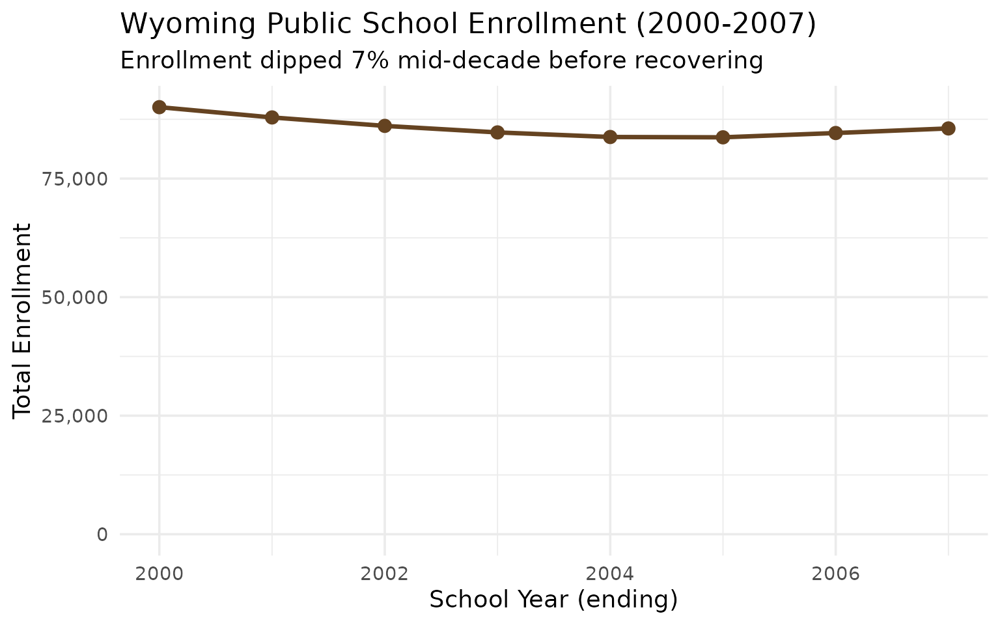
For context: Denver Public Schools alone serves more students than all of Wyoming.
2. Cheyenne and Casper together educate 29% of Wyoming students
Laramie #1 (Cheyenne) and Natrona #1 (Casper) serve nearly a third of the state – Wyoming’s two largest districts in a landscape of 48 others.
top_districts <- enr_2007 |>
filter(is_district, subgroup == "total_enrollment", grade_level == "TOTAL") |>
arrange(desc(n_students)) |>
head(8) |>
select(district_name, n_students)
stopifnot(nrow(top_districts) > 0)
top_districts
#> district_name n_students
#> 1 Laramie #1 12776
#> 2 Natrona #1 11604
#> 3 Campbell #1 7589
#> 4 Sweetwater #1 4742
#> 5 Albany #1 3507
#> 6 Sheridan #2 3080
#> 7 Uinta #1 2944
#> 8 Sweetwater #2 2599
top_districts |>
mutate(district_name = forcats::fct_reorder(district_name, n_students)) |>
ggplot(aes(x = n_students, y = district_name, fill = district_name)) +
geom_col(show.legend = FALSE) +
geom_text(aes(label = scales::comma(n_students)), hjust = -0.1) +
scale_x_continuous(labels = scales::comma, expand = expansion(mult = c(0, 0.15))) +
scale_fill_viridis_d(option = "plasma", begin = 0.2, end = 0.8) +
labs(
title = "Wyoming's Largest School Districts (2007)",
subtitle = "Laramie #1 (Cheyenne) and Natrona #1 (Casper) dominate",
x = "Number of Students",
y = NULL
)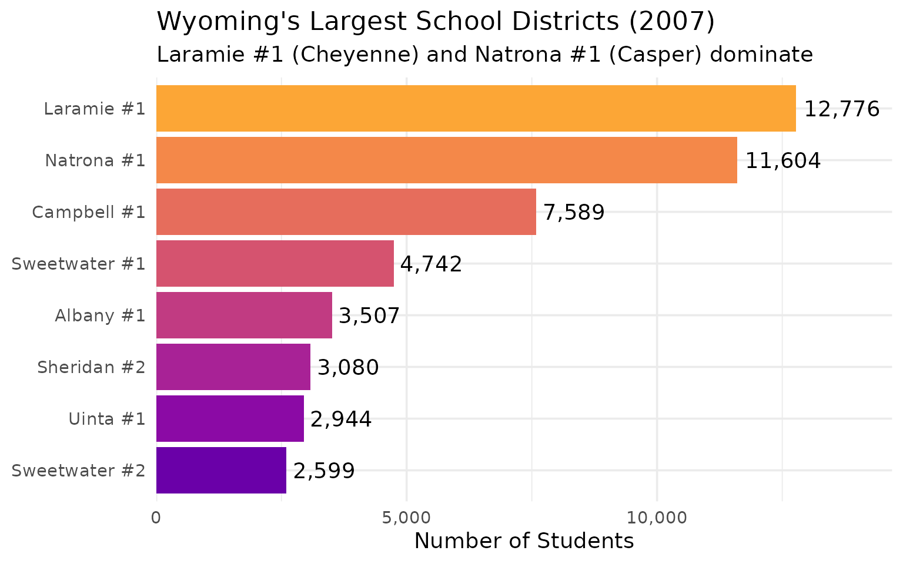
3. Sublette County exploded 47% as natural gas boomed
Sublette #1 (Pinedale) grew from 639 to 940 students between 2000 and 2007 – the fastest growth in the state – fueled by the Jonah and Pinedale Anticline gas fields.
sublette <- enr |>
filter(is_district, district_name == "Sublette #1",
subgroup == "total_enrollment", grade_level == "TOTAL") |>
select(end_year, n_students) |>
mutate(pct_change = round((n_students / lag(n_students) - 1) * 100, 1))
stopifnot(nrow(sublette) > 0)
sublette
#> end_year n_students pct_change
#> 1 2000 639 NA
#> 2 2001 630 -1.4
#> 3 2002 671 6.5
#> 4 2003 689 2.7
#> 5 2004 701 1.7
#> 6 2005 767 9.4
#> 7 2006 841 9.6
#> 8 2007 940 11.8
ggplot(sublette, aes(x = end_year, y = n_students)) +
geom_line(linewidth = 1.2, color = "#CC6600") +
geom_point(size = 3, color = "#CC6600") +
scale_y_continuous(labels = scales::comma) +
labs(
title = "Sublette #1 (Pinedale) Enrollment (2000-2007)",
subtitle = "Natural gas boom drove 47% enrollment growth",
x = "School Year (ending)",
y = "Total Enrollment"
)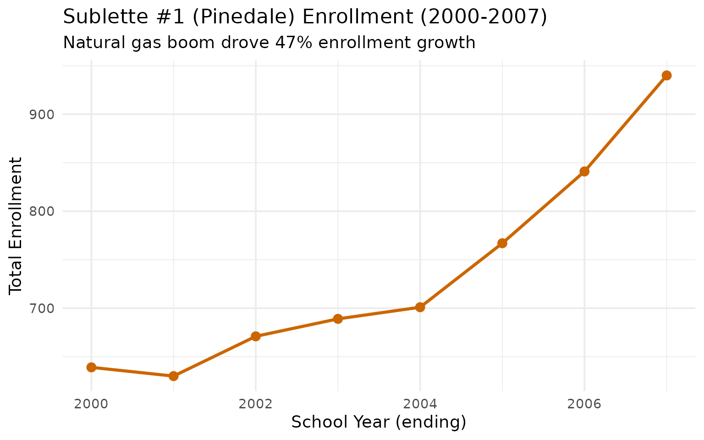
When the Jonah gas field ramped up production, Pinedale transformed from a quiet ranching town into a boomtown.
4. Fremont County lost 14% of its students in seven years
Home to the Wind River Reservation, Fremont County’s eight school districts shed nearly 1,000 students between 2000 and 2007 – the steepest county-level decline in the state.
fremont <- enr |>
filter(is_district, subgroup == "total_enrollment", grade_level == "TOTAL",
grepl("Fremont", district_name)) |>
group_by(end_year) |>
summarize(total = sum(n_students, na.rm = TRUE)) |>
mutate(pct_change = round((total / lag(total) - 1) * 100, 1))
stopifnot(nrow(fremont) > 0)
fremont
#> # A tibble: 8 × 3
#> end_year total pct_change
#> <int> <dbl> <dbl>
#> 1 2000 7273 NA
#> 2 2001 6639 -8.7
#> 3 2002 6504 -2
#> 4 2003 6344 -2.5
#> 5 2004 6299 -0.7
#> 6 2005 6373 1.2
#> 7 2006 6360 -0.2
#> 8 2007 6280 -1.3
ggplot(fremont, aes(x = end_year, y = total)) +
geom_line(linewidth = 1.2, color = "#8B4513") +
geom_point(size = 3, color = "#8B4513") +
scale_y_continuous(labels = scales::comma) +
labs(
title = "Fremont County Enrollment (2000-2007)",
subtitle = "Wind River Reservation region lost nearly 1,000 students",
x = "School Year (ending)",
y = "Total Enrollment"
)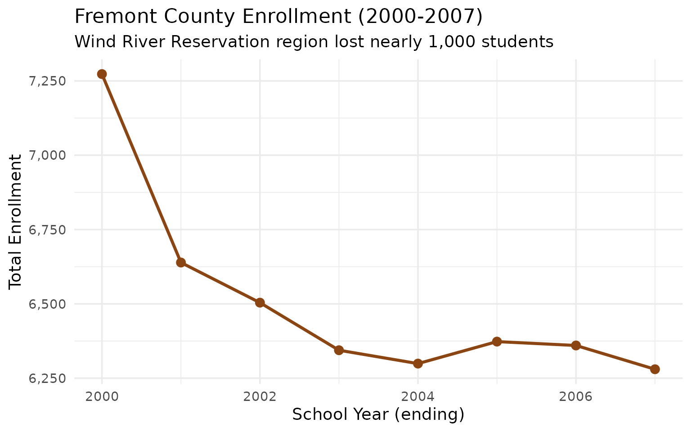
5. Fremont #38 (Wind River Reservation) lost 39% of its students
Among individual districts, Fremont #38 experienced the most severe decline: from 538 students in 2000 to just 328 by 2007.
fremont_districts <- enr |>
filter(is_district, subgroup == "total_enrollment", grade_level == "TOTAL",
grepl("Fremont", district_name)) |>
select(end_year, district_name, n_students)
stopifnot(nrow(fremont_districts) > 0)
fremont_districts |>
filter(end_year %in% c(2000, 2007)) |>
pivot_wider(names_from = end_year, values_from = n_students) |>
mutate(change = `2007` - `2000`,
pct_change = round((`2007` / `2000` - 1) * 100, 1)) |>
arrange(pct_change)
#> # A tibble: 8 × 5
#> district_name `2000` `2007` change pct_change
#> <chr> <dbl> <dbl> <dbl> <dbl>
#> 1 Fremont #38 538 328 -210 -39
#> 2 Fremont #21 530 377 -153 -28.9
#> 3 Fremont #2 291 228 -63 -21.6
#> 4 Fremont #14 647 527 -120 -18.5
#> 5 Fremont #1 1996 1734 -262 -13.1
#> 6 Fremont #25 2540 2355 -185 -7.3
#> 7 Fremont #6 390 388 -2 -0.5
#> 8 Fremont #24 341 343 2 0.6
fremont_districts |>
ggplot(aes(x = end_year, y = n_students, color = district_name)) +
geom_line(linewidth = 1) +
geom_point(size = 2) +
scale_y_continuous(labels = scales::comma) +
labs(
title = "Fremont County District Enrollment (2000-2007)",
subtitle = "Reservation districts experienced steepest declines",
x = "School Year (ending)",
y = "Enrollment",
color = "District"
)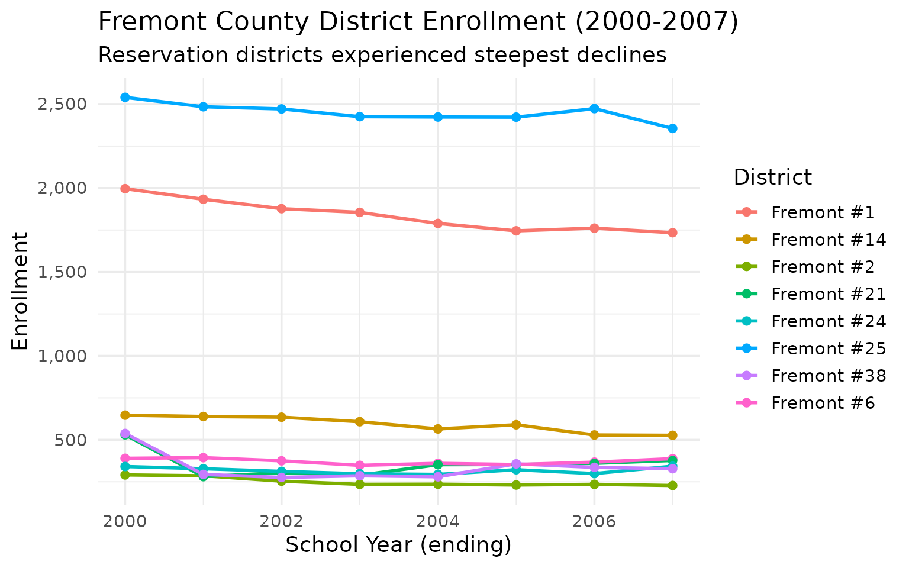
6. Campbell County: Coal kept Gillette stable while the rest of Wyoming shrank
Campbell #1 (Gillette) held nearly steady at ~7,400 students even as the state lost 7%. The Powder River Basin coal economy provided stability – a pattern that would reverse dramatically in later years as coal declined.
campbell <- enr |>
filter(is_district, subgroup == "total_enrollment", grade_level == "TOTAL",
grepl("Campbell", district_name)) |>
select(end_year, district_name, n_students)
campbell_summary <- campbell |>
group_by(end_year) |>
summarize(total = sum(n_students, na.rm = TRUE)) |>
mutate(pct_change = round((total / lag(total) - 1) * 100, 1))
stopifnot(nrow(campbell_summary) > 0)
campbell_summary
#> # A tibble: 8 × 3
#> end_year total pct_change
#> <int> <dbl> <dbl>
#> 1 2000 7488 NA
#> 2 2001 7441 -0.6
#> 3 2002 7368 -1
#> 4 2003 7234 -1.8
#> 5 2004 7198 -0.5
#> 6 2005 7337 1.9
#> 7 2006 7617 3.8
#> 8 2007 7589 -0.4
ggplot(campbell_summary, aes(x = end_year, y = total)) +
geom_line(linewidth = 1.2, color = "#2F4F4F") +
geom_point(size = 3, color = "#2F4F4F") +
scale_y_continuous(labels = scales::comma) +
labs(
title = "Campbell County (Gillette) Enrollment (2000-2007)",
subtitle = "Coal economy kept enrollment stable during statewide decline",
x = "School Year (ending)",
y = "Total Enrollment"
)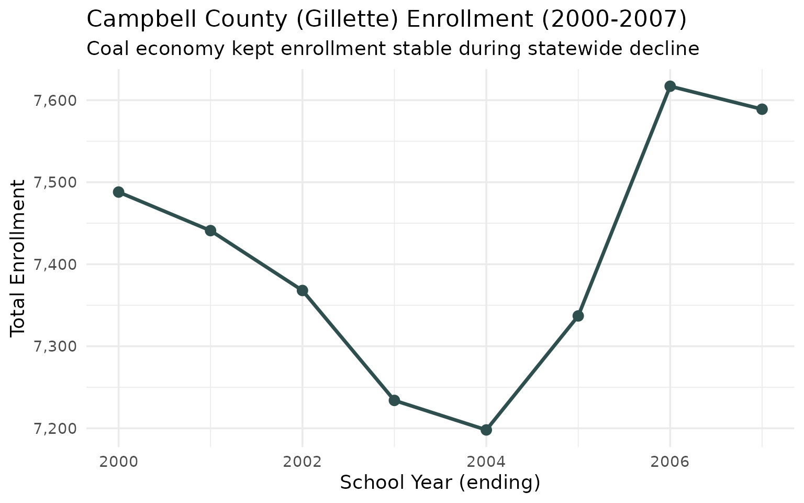
7. Kindergarten overtook 12th grade: Wyoming’s demographic crossover
In 2000, Wyoming graduated 6,851 seniors but enrolled only 5,825 kindergartners. By 2007 the pipeline had flipped: 6,891 kindergartners vs 6,212 12th graders. The state was getting younger at the bottom.
k_vs_12 <- enr |>
filter(is_state, subgroup == "total_enrollment", grade_level %in% c("K", "12")) |>
select(end_year, grade_level, n_students) |>
pivot_wider(names_from = grade_level, values_from = n_students)
stopifnot(nrow(k_vs_12) > 0)
k_vs_12
#> # A tibble: 8 × 3
#> end_year K `12`
#> <int> <dbl> <dbl>
#> 1 2000 5825 6851
#> 2 2001 6002 6832
#> 3 2002 6165 6582
#> 4 2003 6224 6451
#> 5 2004 6263 6272
#> 6 2005 6381 6042
#> 7 2006 6575 6146
#> 8 2007 6891 6212
k_vs_12_long <- enr |>
filter(is_state, subgroup == "total_enrollment", grade_level %in% c("K", "12")) |>
select(end_year, grade_level, n_students)
ggplot(k_vs_12_long, aes(x = end_year, y = n_students, color = grade_level)) +
geom_line(linewidth = 1.2) +
geom_point(size = 3) +
scale_y_continuous(labels = scales::comma) +
scale_color_manual(values = c("K" = "#0072B2", "12" = "#D55E00")) +
labs(
title = "Kindergarten vs 12th Grade Enrollment (2000-2007)",
subtitle = "K enrollment overtook 12th grade by 2005",
x = "School Year (ending)",
y = "Enrollment",
color = "Grade"
)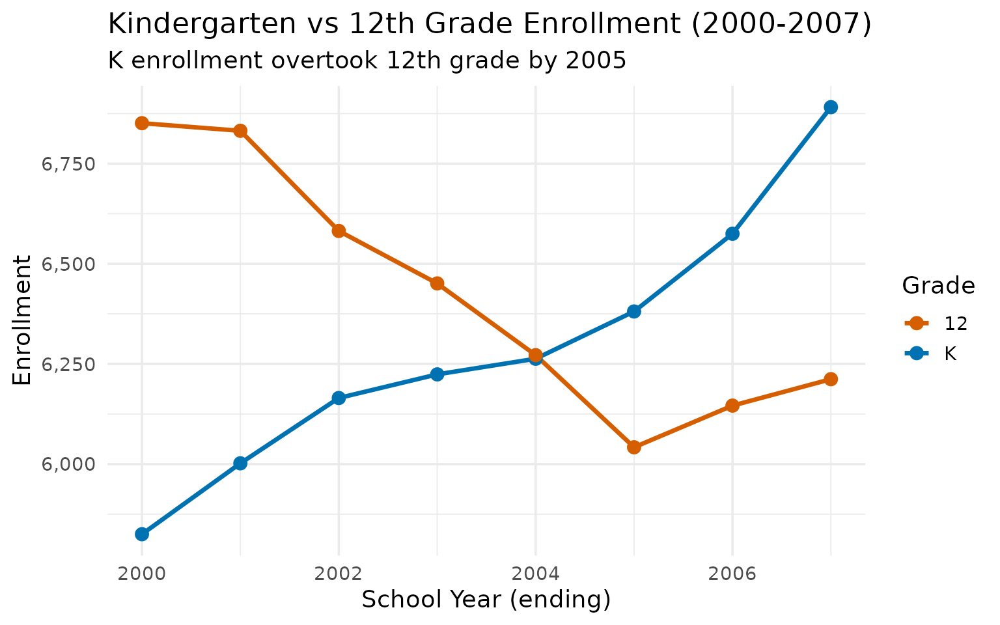
8. Wyoming consolidated 28 schools in seven years
From 382 schools in 2000 to 354 in 2007, Wyoming lost 7% of its school buildings. Rural school consolidation was reshaping the education landscape even as enrollment began recovering.
school_counts <- enr |>
filter(is_school, subgroup == "total_enrollment", grade_level == "TOTAL") |>
group_by(end_year) |>
summarize(n_schools = n(), total_students = sum(n_students, na.rm = TRUE)) |>
mutate(avg_size = round(total_students / n_schools))
stopifnot(nrow(school_counts) > 0)
school_counts
#> # A tibble: 8 × 4
#> end_year n_schools total_students avg_size
#> <int> <int> <dbl> <dbl>
#> 1 2000 382 90065 236
#> 2 2001 378 87897 233
#> 3 2002 377 86116 228
#> 4 2003 367 84739 231
#> 5 2004 361 83772 232
#> 6 2005 362 83705 231
#> 7 2006 359 84611 236
#> 8 2007 354 85578 242
ggplot(school_counts, aes(x = end_year, y = n_schools)) +
geom_line(linewidth = 1.2, color = "#009E73") +
geom_point(size = 3, color = "#009E73") +
scale_y_continuous(limits = c(0, NA)) +
labs(
title = "Number of Wyoming Schools (2000-2007)",
subtitle = "28 schools closed or consolidated in seven years",
x = "School Year (ending)",
y = "Number of Schools"
)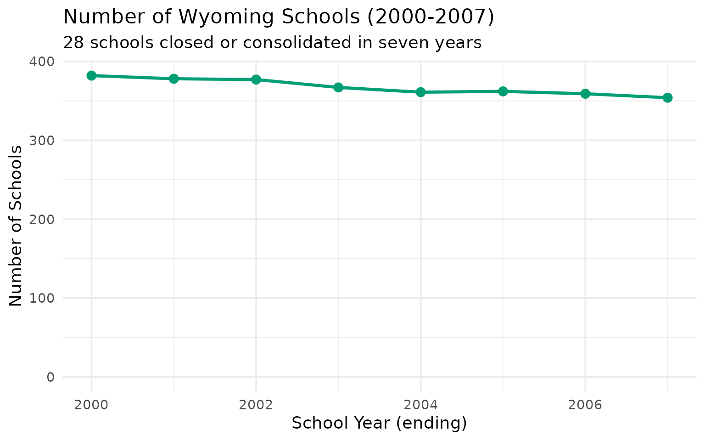
9. Sweetwater County’s twin cities: Rock Springs held, Green River shrank
Rock Springs (Sweetwater #1) and Green River (Sweetwater #2) are 15 miles apart but had different enrollment trajectories. Rock Springs recovered by 2007; Green River kept declining.
sweetwater <- enr |>
filter(is_district, subgroup == "total_enrollment", grade_level == "TOTAL",
grepl("Sweetwater", district_name)) |>
select(end_year, district_name, n_students)
stopifnot(nrow(sweetwater) > 0)
sweetwater
#> end_year district_name n_students
#> 1 2000 Sweetwater #1 4665
#> 2 2000 Sweetwater #2 2928
#> 3 2001 Sweetwater #1 4401
#> 4 2001 Sweetwater #2 2774
#> 5 2002 Sweetwater #1 4264
#> 6 2002 Sweetwater #2 2688
#> 7 2003 Sweetwater #1 4193
#> 8 2003 Sweetwater #2 2650
#> 9 2004 Sweetwater #1 4197
#> 10 2004 Sweetwater #2 2620
#> 11 2005 Sweetwater #1 4240
#> 12 2005 Sweetwater #2 2582
#> 13 2006 Sweetwater #1 4413
#> 14 2006 Sweetwater #2 2551
#> 15 2007 Sweetwater #1 4742
#> 16 2007 Sweetwater #2 2599
sweetwater |>
ggplot(aes(x = end_year, y = n_students, color = district_name)) +
geom_line(linewidth = 1.2) +
geom_point(size = 2) +
scale_y_continuous(labels = scales::comma) +
labs(
title = "Sweetwater County Districts (2000-2007)",
subtitle = "Rock Springs recovered; Green River kept declining",
x = "School Year (ending)",
y = "Enrollment",
color = "District"
)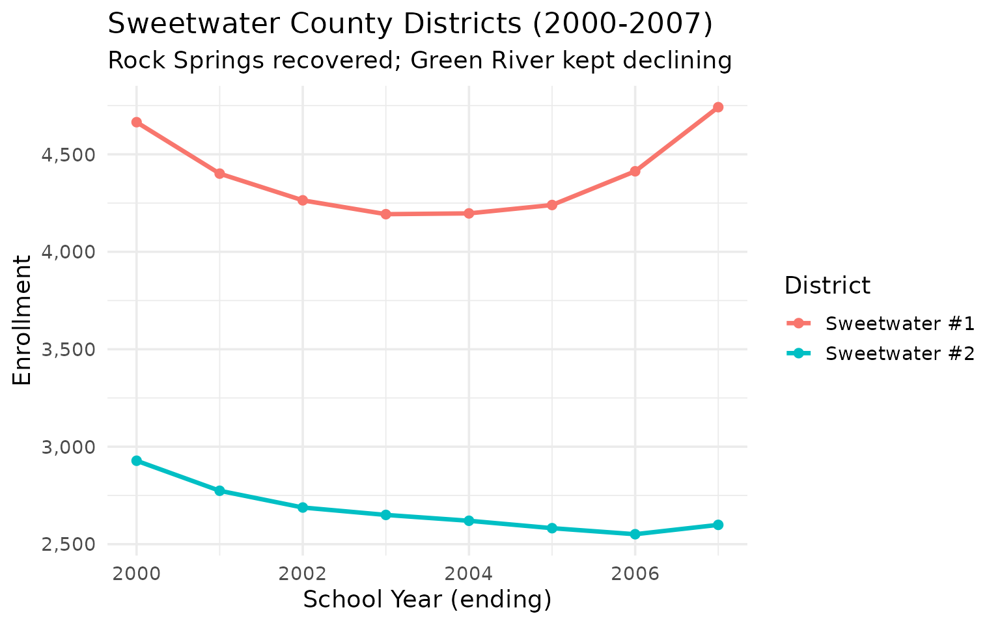
10. Teton County (Jackson Hole) stayed flat while the rest of Wyoming shrank
In a state where most districts were losing students, Teton #1 held steady around 2,200-2,400 – Jackson’s tourism and recreation economy insulated it from the broader decline.
teton <- enr |>
filter(is_district, subgroup == "total_enrollment", grade_level == "TOTAL",
grepl("Teton", district_name)) |>
select(end_year, district_name, n_students)
stopifnot(nrow(teton) > 0)
teton
#> end_year district_name n_students
#> 1 2000 Teton #1 2366
#> 2 2001 Teton #1 2209
#> 3 2002 Teton #1 2248
#> 4 2003 Teton #1 2296
#> 5 2004 Teton #1 2270
#> 6 2005 Teton #1 2265
#> 7 2006 Teton #1 2219
#> 8 2007 Teton #1 2270
teton |>
ggplot(aes(x = end_year, y = n_students, color = district_name)) +
geom_line(linewidth = 1.2) +
geom_point(size = 2) +
scale_y_continuous(labels = scales::comma) +
labs(
title = "Teton County (Jackson) Enrollment (2000-2007)",
subtitle = "Tourism economy kept enrollment stable",
x = "School Year (ending)",
y = "Enrollment",
color = "District"
)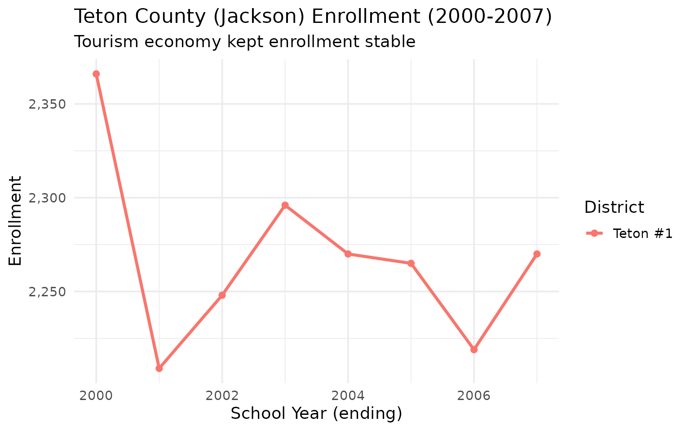
11. Elementary enrollment grew while high school shrank
Between 2000 and 2007, elementary (K-5) enrollment rose from 38,545 to 39,336 (+2%) while high school (9-12) dropped from 30,172 to 26,839 (-11%). The pipeline was filling from the bottom.
elem <- enr |>
filter(is_state, subgroup == "total_enrollment",
grade_level %in% c("K", "01", "02", "03", "04", "05")) |>
group_by(end_year) |>
summarize(students = sum(n_students)) |>
mutate(level = "Elementary (K-5)")
hs <- enr |>
filter(is_state, subgroup == "total_enrollment",
grade_level %in% c("09", "10", "11", "12")) |>
group_by(end_year) |>
summarize(students = sum(n_students)) |>
mutate(level = "High School (9-12)")
elem_hs <- bind_rows(elem, hs)
stopifnot(nrow(elem_hs) > 0)
elem_hs
#> # A tibble: 16 × 3
#> end_year students level
#> <int> <dbl> <chr>
#> 1 2000 38545 Elementary (K-5)
#> 2 2001 37827 Elementary (K-5)
#> 3 2002 37310 Elementary (K-5)
#> 4 2003 36667 Elementary (K-5)
#> 5 2004 36562 Elementary (K-5)
#> 6 2005 36934 Elementary (K-5)
#> 7 2006 38174 Elementary (K-5)
#> 8 2007 39336 Elementary (K-5)
#> 9 2000 30172 High School (9-12)
#> 10 2001 28863 High School (9-12)
#> 11 2002 27878 High School (9-12)
#> 12 2003 27323 High School (9-12)
#> 13 2004 27029 High School (9-12)
#> 14 2005 27007 High School (9-12)
#> 15 2006 27098 High School (9-12)
#> 16 2007 26839 High School (9-12)
ggplot(elem_hs, aes(x = end_year, y = students, color = level)) +
geom_line(linewidth = 1.2) +
geom_point(size = 3) +
scale_y_continuous(labels = scales::comma) +
scale_color_manual(values = c("Elementary (K-5)" = "#0072B2", "High School (9-12)" = "#D55E00")) +
labs(
title = "Elementary vs High School Enrollment (2000-2007)",
subtitle = "Elementary growing while high school shrank",
x = "School Year (ending)",
y = "Enrollment",
color = "Level"
)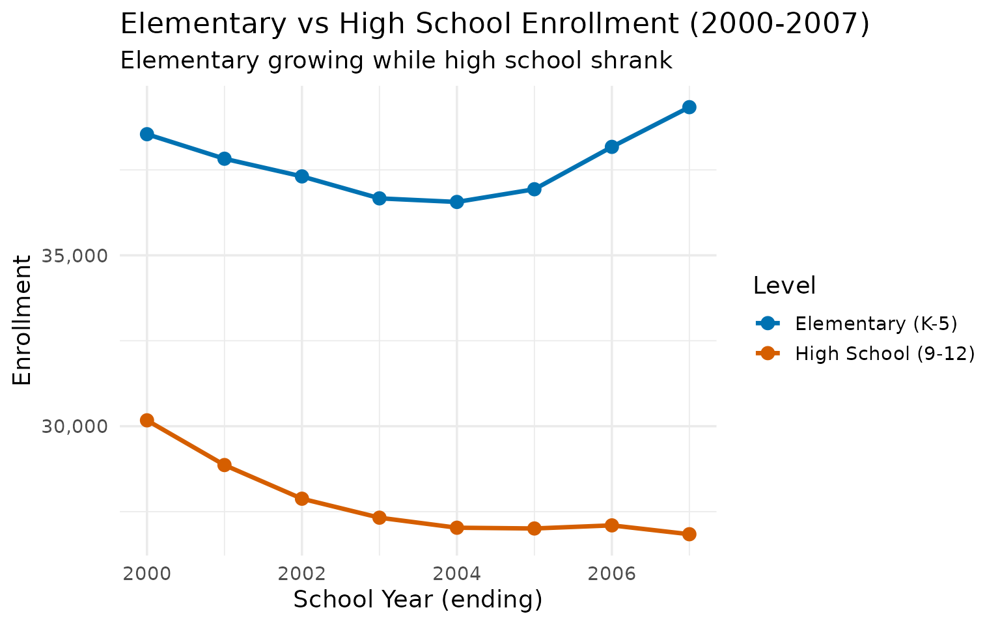
12. Vast distances define Wyoming education: 48 districts across 97,000 square miles
Wyoming’s 48 school districts average about 1,780 students each, but cover an average of 2,000 square miles per district. Many districts are geographically larger than some eastern states.
n_districts <- enr_2007 |>
filter(is_district, subgroup == "total_enrollment", grade_level == "TOTAL") |>
summarize(
n_districts = n(),
total_students = sum(n_students, na.rm = TRUE),
avg_per_district = round(total_students / n_districts)
)
stopifnot(nrow(n_districts) > 0)
n_districts
#> n_districts total_students avg_per_district
#> 1 48 85578 1783With an average of fewer than 1,800 students per district, Wyoming’s districts are intimate by national standards but geographically immense.
13. Small schools are the Wyoming norm: 109 schools have under 100 students
In 2007, 109 out of 354 schools (31%) served fewer than 100 students. Wyoming pays to keep tiny schools open across the frontier rather than bus children hours to a larger campus.
school_sizes <- enr_2007 |>
filter(is_school, subgroup == "total_enrollment", grade_level == "TOTAL") |>
mutate(size_category = case_when(
n_students < 50 ~ "Under 50",
n_students < 100 ~ "50-99",
n_students < 250 ~ "100-249",
n_students < 500 ~ "250-499",
TRUE ~ "500+"
)) |>
count(size_category, name = "n_schools") |>
mutate(size_category = factor(size_category,
levels = c("Under 50", "50-99", "100-249", "250-499", "500+")))
stopifnot(nrow(school_sizes) > 0)
school_sizes
#> size_category n_schools
#> 1 100-249 105
#> 2 250-499 109
#> 3 50-99 36
#> 4 500+ 31
#> 5 Under 50 73
ggplot(school_sizes, aes(x = size_category, y = n_schools, fill = size_category)) +
geom_col(show.legend = FALSE) +
geom_text(aes(label = n_schools), vjust = -0.3) +
scale_fill_viridis_d(option = "mako", begin = 0.3, end = 0.8) +
labs(
title = "Wyoming School Size Distribution (2007)",
subtitle = "109 schools serve fewer than 100 students",
x = "School Size (students)",
y = "Number of Schools"
)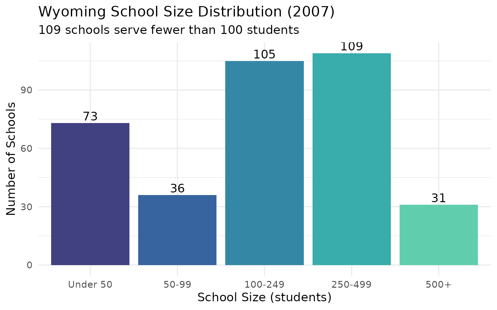
14. Grade-level enrollment: 9th grade bulge reflects the demographic pipeline
The 2007 grade-level snapshot shows a pronounced 9th grade bulge (7,069 students) that shrinks to 6,212 by 12th grade – a pattern suggesting either dropouts or outmigration in the upper grades.
grade_enr <- enr_2007 |>
filter(is_state, subgroup == "total_enrollment",
grade_level %in% c("K", "01", "02", "03", "04", "05",
"06", "07", "08", "09", "10", "11", "12")) |>
select(grade_level, n_students) |>
mutate(grade_level = factor(grade_level,
levels = c("K", "01", "02", "03", "04", "05",
"06", "07", "08", "09", "10", "11", "12")))
stopifnot(nrow(grade_enr) > 0)
grade_enr
#> grade_level n_students
#> 1 K 6891
#> 2 01 6565
#> 3 02 6512
#> 4 03 6485
#> 5 04 6489
#> 6 05 6394
#> 7 06 6416
#> 8 07 6321
#> 9 08 6666
#> 10 09 7069
#> 11 10 7160
#> 12 11 6398
#> 13 12 6212
ggplot(grade_enr, aes(x = grade_level, y = n_students, fill = grade_level)) +
geom_col(show.legend = FALSE) +
geom_text(aes(label = scales::comma(n_students)), vjust = -0.3, size = 3) +
scale_y_continuous(labels = scales::comma, expand = expansion(mult = c(0, 0.1))) +
scale_fill_viridis_d(option = "viridis") +
labs(
title = "Wyoming Enrollment by Grade Level (2007)",
subtitle = "9th grade bulge shrinks by 12% through senior year",
x = "Grade Level",
y = "Number of Students"
)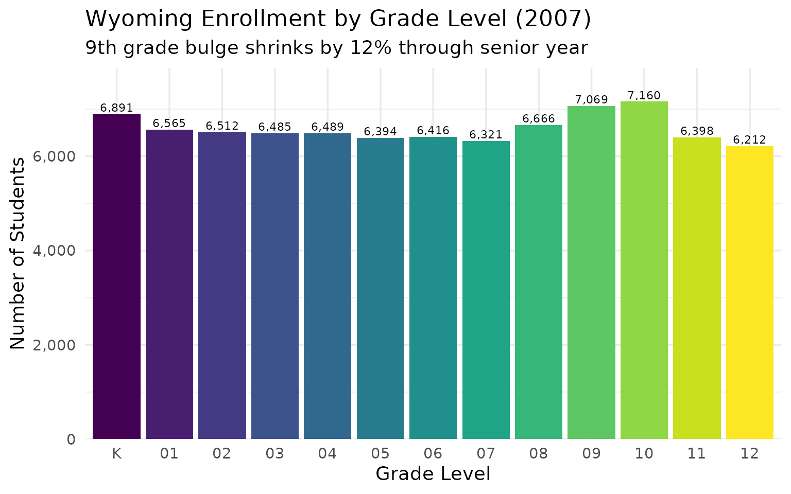
15. The smallest districts: Washakie #2 has just 96 students
Wyoming keeps schools open in communities so small that the entire district could fit in a single classroom. Washakie #2 (Ten Sleep) enrolled 96 students in 2007; Sheridan #3 (Clearmont) had 101.
smallest <- enr_2007 |>
filter(is_district, subgroup == "total_enrollment", grade_level == "TOTAL") |>
arrange(n_students) |>
head(10) |>
select(district_name, n_students)
stopifnot(nrow(smallest) > 0)
smallest
#> district_name n_students
#> 1 Washakie #2 96
#> 2 Sheridan #3 101
#> 3 Park #16 124
#> 4 Fremont #2 228
#> 5 Platte #2 229
#> 6 Weston #7 270
#> 7 Big Horn #4 328
#> 8 Fremont #38 328
#> 9 Fremont #24 343
#> 10 Niobrara #1 364
smallest |>
mutate(district_name = forcats::fct_reorder(district_name, n_students)) |>
ggplot(aes(x = n_students, y = district_name, fill = district_name)) +
geom_col(show.legend = FALSE) +
geom_text(aes(label = scales::comma(n_students)), hjust = -0.1) +
scale_x_continuous(labels = scales::comma, expand = expansion(mult = c(0, 0.2))) +
scale_fill_viridis_d(option = "mako", begin = 0.3, end = 0.8) +
labs(
title = "Wyoming's Smallest School Districts (2007)",
subtitle = "One-school towns keeping education local in the rural West",
x = "Number of Students",
y = NULL
)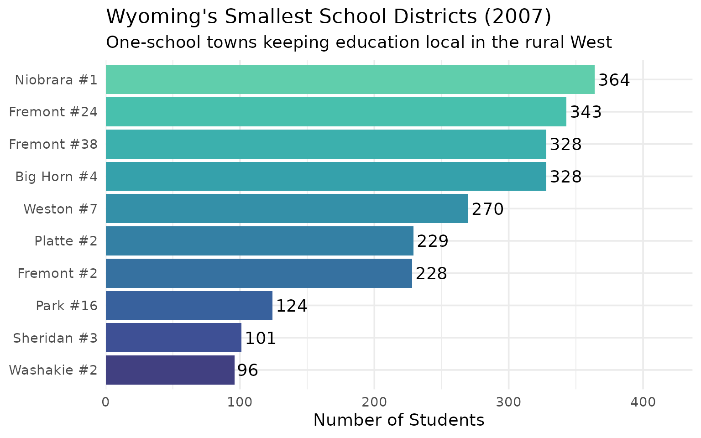
Summary
Wyoming’s 2000-2007 school enrollment data reveals:
- America’s smallest system: Under 90,000 students statewide
- Energy-driven volatility: State enrollment fell 7% before recovering with the gas boom
- Two-city dominance: Cheyenne and Casper together serve 29% of students
- Gas boom town: Sublette County (Pinedale) grew 47% as natural gas production surged
- Reservation decline: Fremont County lost 14% of students, with some districts losing nearly 40%
- Coal stability: Campbell County held steady in an era before coal’s decline
- Demographic crossover: Kindergarten enrollment overtook 12th grade by 2005
- School consolidation: 28 schools closed between 2000 and 2007
- Small school tradition: 109 of 354 schools serve under 100 students
- Tiny districts: Washakie #2 (Ten Sleep) enrolled just 96 students
These patterns reflect Wyoming’s unique position as America’s least populous state, where energy economics and vast distances shape every aspect of public education.
Data sourced from the Wyoming Department of Education edu.wyoming.gov. Currently available years: 2000-2007 (PDF era). Modern era data (2008+) from the WDE reporting portal is not currently accessible.
Session Info
sessionInfo()
#> R version 4.5.2 (2025-10-31)
#> Platform: x86_64-pc-linux-gnu
#> Running under: Ubuntu 24.04.3 LTS
#>
#> Matrix products: default
#> BLAS: /usr/lib/x86_64-linux-gnu/openblas-pthread/libblas.so.3
#> LAPACK: /usr/lib/x86_64-linux-gnu/openblas-pthread/libopenblasp-r0.3.26.so; LAPACK version 3.12.0
#>
#> locale:
#> [1] LC_CTYPE=C.UTF-8 LC_NUMERIC=C LC_TIME=C.UTF-8
#> [4] LC_COLLATE=C.UTF-8 LC_MONETARY=C.UTF-8 LC_MESSAGES=C.UTF-8
#> [7] LC_PAPER=C.UTF-8 LC_NAME=C LC_ADDRESS=C
#> [10] LC_TELEPHONE=C LC_MEASUREMENT=C.UTF-8 LC_IDENTIFICATION=C
#>
#> time zone: UTC
#> tzcode source: system (glibc)
#>
#> attached base packages:
#> [1] stats graphics grDevices utils datasets methods base
#>
#> other attached packages:
#> [1] ggplot2_4.0.2 tidyr_1.3.2 dplyr_1.2.0 wyschooldata_0.1.0
#>
#> loaded via a namespace (and not attached):
#> [1] gtable_0.3.6 jsonlite_2.0.0 compiler_4.5.2 tidyselect_1.2.1
#> [5] jquerylib_0.1.4 systemfonts_1.3.1 scales_1.4.0 textshaping_1.0.4
#> [9] yaml_2.3.12 fastmap_1.2.0 R6_2.6.1 labeling_0.4.3
#> [13] generics_0.1.4 knitr_1.51 forcats_1.0.1 tibble_3.3.1
#> [17] desc_1.4.3 bslib_0.10.0 pillar_1.11.1 RColorBrewer_1.1-3
#> [21] rlang_1.1.7 utf8_1.2.6 cachem_1.1.0 xfun_0.56
#> [25] fs_1.6.6 sass_0.4.10 S7_0.2.1 viridisLite_0.4.3
#> [29] cli_3.6.5 withr_3.0.2 pkgdown_2.2.0 magrittr_2.0.4
#> [33] digest_0.6.39 grid_4.5.2 lifecycle_1.0.5 vctrs_0.7.1
#> [37] evaluate_1.0.5 glue_1.8.0 farver_2.1.2 ragg_1.5.0
#> [41] rmarkdown_2.30 purrr_1.2.1 tools_4.5.2 pkgconfig_2.0.3
#> [45] htmltools_0.5.9